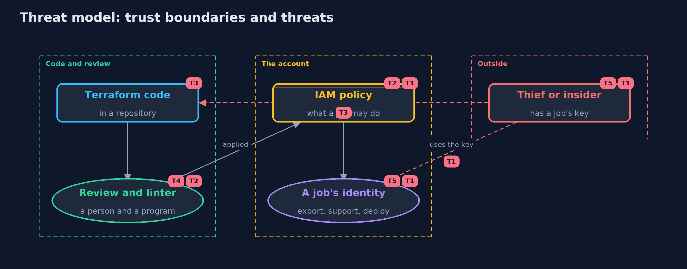

Threat Model — Least Privilege with Terraform and LocalStack
A threat model answers four questions: what are we protecting, who or what could harm it, how, and what do we do about it. This one covers this project's own demo system, not a production deployment. Domain: an online store.
Scope
How an online store's cloud permissions are written, reviewed and applied: Terraform code, the IAM policies it produces, and the identities that wear them. It covers a thief or insider who holds one job's key and a change to the code that widens a policy. It does not cover how keys are stored, network access, or the cloud provider.
What we protect (assets)
- The data and actions the account protects: reports, orders, customers, secrets and the key.
- The Terraform code and the policies it produces.
- The keys of each job's identity.
Who and what acts on the system
- The nightly export, the support tool and the deploy pipeline.
- A thief or insider holding one job's key.
- A developer who changes the policy code.
- A reviewer, and the linter.
Trust boundaries
A trust boundary is a line that data or a request crosses between parts that trust each other differently. Threats cluster where those lines are.
- Code repository to the account: a merged change becomes live permissions.
- A job's identity to the account: what its key can reach is the blast radius.

Each dashed box is a trust boundary. A rose tag such as T1 shows where the threat of that number, in the table below, applies.
Threats, using STRIDE
STRIDE is a checklist of six kinds of threat: Spoofing (S), Tampering (T), Repudiation (R), Information disclosure (I), Denial of service (D), Elevation of privilege (E).
| Id | Kind | Threat | Where it shows up | Control in this project | What is left |
|---|---|---|---|---|---|
| T1 | Elevation of privilege | A stolen job key does everything a wildcard policy allows | Catalogue.blastRadius |
One scoped policy per job, and a count of its blast radius | A small count can still hide escalation, so policies are read as well |
| T2 | Elevation of privilege | A policy that looks small grants a way to more power, such as iam:PassRole on every role | Linter |
The linter flags escalation actions on every resource, and a person reviews the plan | The linter knows a fixed list, so new escalation paths need new rules |
| T3 | Tampering | A change to the code widens a policy and is merged without notice | the Terraform repository | Policies as code are reviewed as a diff, and the linter runs in the pipeline | Review only helps if someone reads it; require approval for permission changes |
| T4 | Information disclosure | The evaluator is trusted for something it does not model, such as a condition or an organisation rule | PolicyDocument.parse |
A statement with a condition is refused, and the docs list what is not modelled | Real enforcement must be tested in a real account |
| T5 | Repudiation | Nobody can tell which job used a permission, because jobs share one identity | the job identities | One identity per job, so logs name the job | Logging itself is outside this project |
Assumptions
- The emulator in the integration tests uses test credentials and is thrown away.
- Reviewers read the plan, and the linter runs in the pipeline.
- The catalogue of 25 things stands for the account, and the demo account number is a fake.
Out of scope
- Enforcement by a real AWS account or a paid emulator.
- Conditions, resource policies, session policies and organisation rules.
- Where job keys are stored.
How the tests check this
GlobTestchecks star, question mark and the case rules.EvaluatorTestchecks deny by default, deny in any order, boundaries, NotAction and refused conditions.FixturesAndLinterTestchecks the blast radius of every policy, the bucket against contents rule and the linter findings.TerraformInteropTest(integration) applies the code with OpenTofu to LocalStack and checks that what is stored equals the fixtures, that the boundary is attached and that a second plan has nothing to change.DemoRunsTestcompares the whole demo with the golden output.
Where this model goes next
That completes the safe-habits module. Higher levels build on it: applying least privilege to identity providers, secrets and the software supply chain.